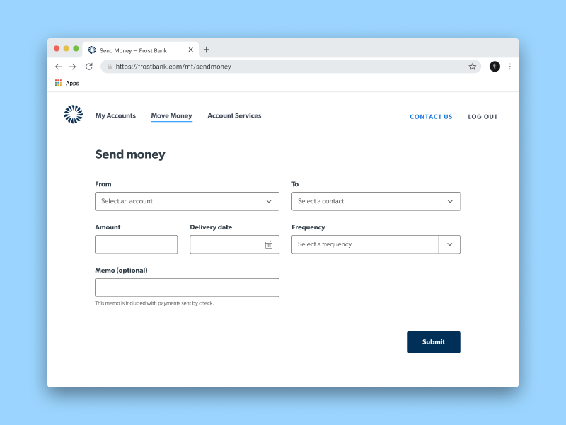
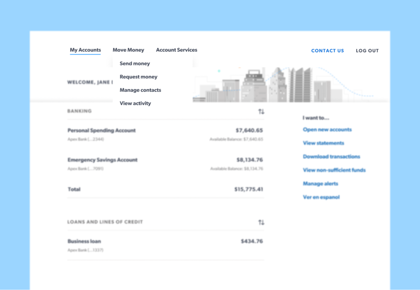

Designing products and systems for organizations like Frost Bank.
Darío Figueroa is a designer that codes with a passion for empowering people. Currently based out of San Antonio and designing money movement experiences at Frost Bank.
twitterdribbbleinstagramgithubdariofigs@gmail.comlinkedinStreamlining Money Movement
Overview
I did some research and testing around how Frost and other financial institutions would be able to simplify the Money Movement (transfers, bill payments, P2P payments) experience on the front-end for their users by accomplishing all those tasks from the same screen.
Problem
The majority of users in our baseline testing struggled to identify which of the Money Movement rails they needed to interact with to get their money from A to B.
Research participants explored all three move money tabs and their associated landing pages before identifying the correct option.
Solution
If we creating a single, dynamic flow, we could eliminate the points of confusion and frustration and manage which rail actually performs the transaction on the back end.

Results
This experience never made it into production but participants were thrilled and wished for something like this.
Participants commented, "That was much easier than expected. Everything was right there, simple and easy", or "This is quick, efficient, and I have confidence that [the transaction] will go through" and much more.